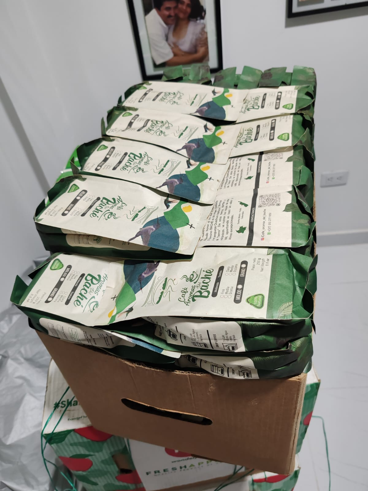
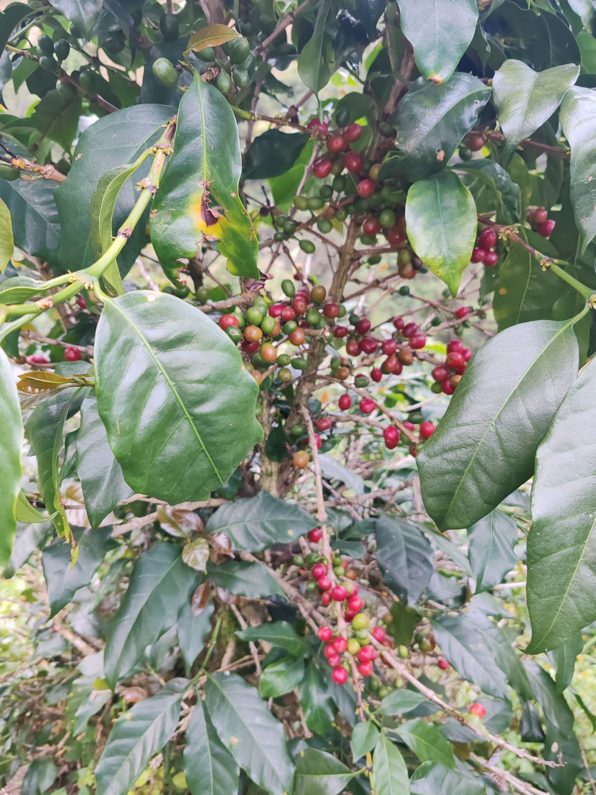
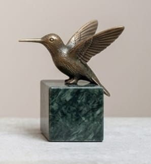
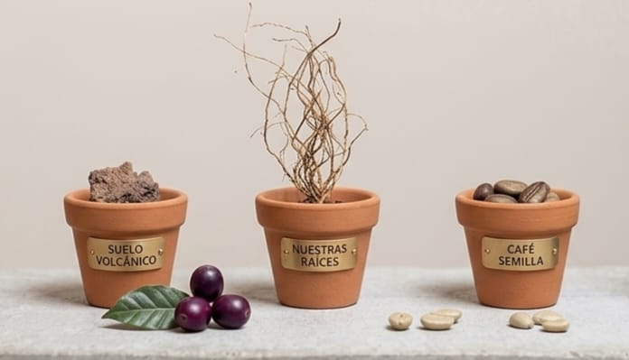
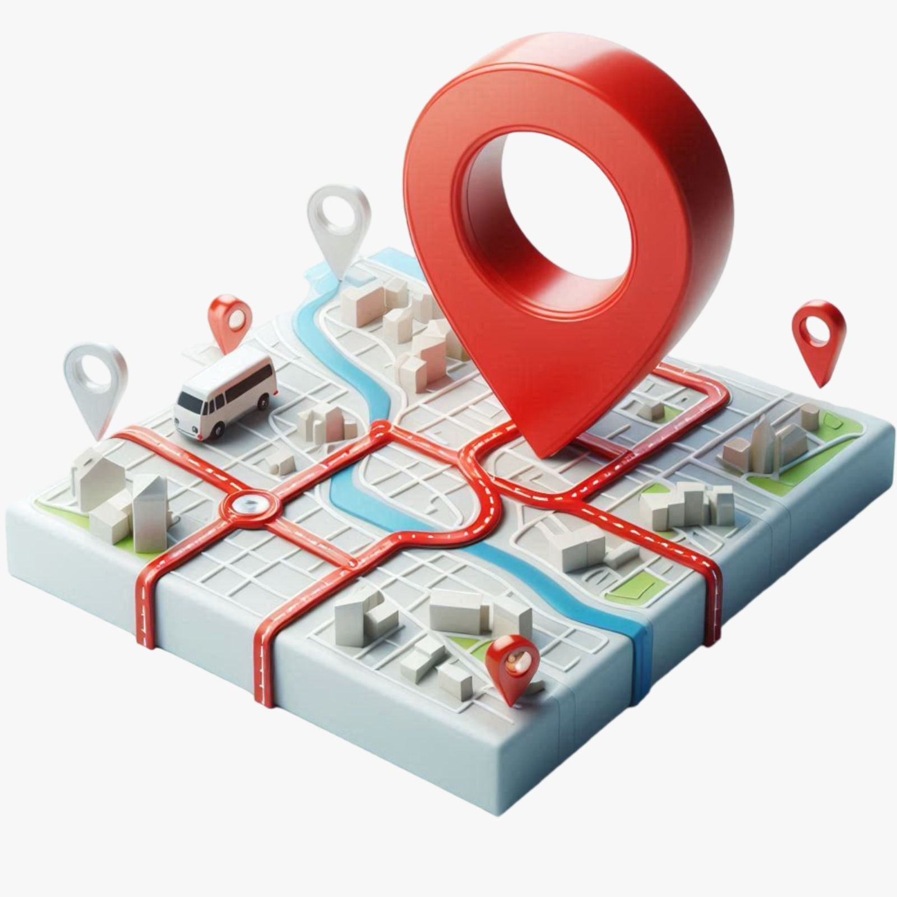
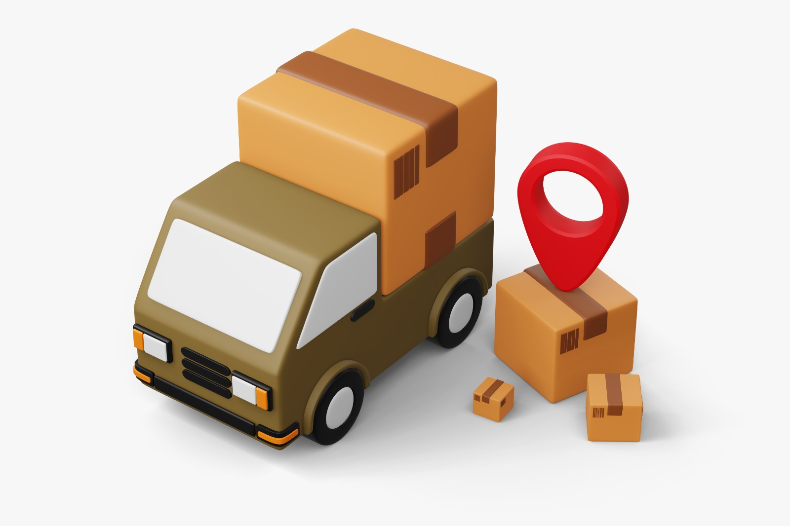

Tostión a elegir
Café Molido Fino
Perfecto para Drip Coffee y espresso. Molienda fina que resalta notas frutales y frescas.
Santa María, Huila — Colombia
Café suave de las tierras fértiles del Huila
Un café conocido por sus notas frescas y vibrantes que evocan la esencia de las frutas maduras, cultivado en las montañas volcánicas del municipio de Santa María.


Montañas Volcánicas
Santa María, Huila
Directo desde las fincas de Santa María, Huila — donde el río Baché riega tierras fértiles y volcánicas que dan vida a un grano excepcional.
Este café suave es conocido por sus notas frescas y vibrantes que evocan la esencia de las frutas frescas y maduras, desarrollándose plenamente en el paladar.
Cada método resalta facetas distintas del café. Elige el tuyo.
Perfecto para Drip Coffee y espresso. Molienda fina que resalta notas frutales y frescas.
Grano entero para moler en casa según tu método favorito. Conserva el aroma hasta el último momento.
Ideal para French Press y Chemex. Equilibrio perfecto entre cuerpo y fragancia. Disponible en tostión media u oscura.
Lo que hace único a nuestro café
Cultivado en Santa María, Huila — tierra volcánica y fértil bañada por el río Baché, cuyo nombre en Quechua significa "Arroyo de Tierra".
Notas frescas y vibrantes que evocan frutas frescas y maduras. Un café de taza limpia, baja acidez y aroma excepcional.
Empaque 60% biodegradable impreso sobre papel reciclante derivado de la caña de azúcar. Sabor consciente con el planeta.
Sin intermediarios. Compramos directamente a las familias cafeteras de Santa María, garantizando frescura y precio justo.
Nació en el río, creció en la montaña
Nace nuestro café Aromas del Baché, haciendo honor al río que lo recorre. Es un café suave, conocido por sus notas frescas y vibrantes que evocan la esencia de las frutas frescas y maduras, desarrollándose plenamente en el paladar.

El término BACHÉ es de origen Chibcha y en lengua Quechua significa "Arroyo de Tierra". De estas tierras fértiles y volcánicas se nutren las raíces de este café, aportando en taza un sabor y aroma excepcionales.

Nuestros espacios y macetas comunitarias que ayudan a la biodiversidad local.
El árbol o arbusto del café (Coffea) es una planta tropical perenne de la familia de las rubiáceas, originaria de Etiopía. Sus frutos, conocidos como "cerezas de café", contienen en su interior las semillas que, después de ser tostadas y molidas, se utilizan para preparar una de las bebidas más consumidas del mundo.
Cómo prepararlo — Cada método resalta facetas distintas del café
Santa María, Huila · Colombia


Realizamos envíos a todo Colombia.
Escríbenos para coordinar tu
pedido.